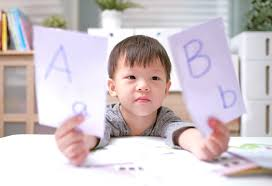
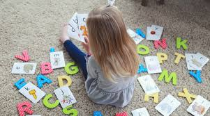

Why Language and Literacy Matter
Language and literacy development are key values for children’s cognitive and social development as young learners. Among the areas it is effective, there is a significant emphasis on growing vocabularies, deepening narrative abilities, and improving overall understanding provided by the firm, stylised storytelling. Children do not only learn new words while listening but also repeat structures of sentences and the linkage between corresponding thoughts. As kids read or listen, a process of acquisition of knowledge of causes, consequences, temporal relationships and emotions starts. The development of an extensive vocabulary is also another major aspect while in the language growth factor; the greater the number of the words available, the easier for the kid to express himself with words, his feelings, and requirements. Narrative skills refer to the skills that enable children to build up and/or follow some dynamics and it assists in improving their thinking ability and creativity. For language and literacy, these simultaneous learning activities enable children in early education to achieve the knowledge that is vital in compulsory academic achievements and lifelong use.
Theories and Perspectives
The Social Interaction Theory developed by Lev Vygotsky reiterates that intention of man is a socially intentional activity. He stated that, children acquire knowledge, grow and gain their knowledge through processes that involve knowledge from others starting with parents, teachers and peers. From the perspectives of language and literacy Vygotsky underscored a simple note that language is used as a thinking tool and that in the process of development, children’s speech and communication should be encouraged through scaffold learning. Scaffolding is fundamental to this theory; it is a kind of support from adults to enable children to do something they cannot do independently, although they can achieve such a task with some support. The abbreviated term for early learning to read and write systems is emergent literacy, whereby children start to grasp that printed letters stand for speech. It assumes that literacy is, in fact, a progressive and social activities with children, which is affected by social, cultural, and environmental conditions. The author of Vygotsky’s theory supports a rich emerging interaction between the learner, and socially rich environment for language and literacy acquisition.
Resources and Tools
In this case there are many resources and tools which can be used in the process of facilitating language and literacy development in early childhood. Reading in particular is an indispensable instrument in building effective vocabulary as well as creating a proper base for such skills as narrating and comprehending text. I have found that in picture books especially children are being assisted in coinciding visuals to text hence enhancing comprehension. The audiobooks are also helpful as it can serve another purpose as the children are exposed to fluent reading while listening to stories which enhances their listening skills, exposition and skills related to the rhythm of language. Students use apps, such as Book Creator to produce multi-media, interactive stories for children through images, text and narrating. Incidentally, this process also promotes creativity and literacy as well as offering the children opportunities to practice on writing as well as on sequencing. These tools do not only enhance literacy but also everyone loves activities that include education and enjoyment at the same time. That way, with these resources, children are able to interact with language and foster their reading and writing skills in special ways.
Learning Experiences
0-2 Years
Infants and toddlers should be encouraged to read simple books which have bright pictures and hardly any words. This activity also aids early recognition of objects, animals and people for their colour, shape and size, as well as establishing a good rapport with books and storytelling.
2-3 Years



Before moving into the next section is a good activity as the toddlers are able to match words with the pictures. Books with pictures alongside the words, picture cards or names of objects that can be flash cards or applications on tablet or phone which contain words and pictures side by side are helpful in increasing the word recognition while at the same time improving the toddler’s recognition skills.
3-5 Years
Communication is prompted by writing simple story books in as far as preschoolers developmental level is concerned. It will assist children learn simple story plot, the initial, middle and last part and this activity will assist them develop their motor ability when drawing and writing.
6-8 Years
At a later age, children can use digital storytelling as they learn through apps such as Book Creator to construct their own stories. It assists them in acquiring the skills in writing, telling and composing stories, as well as creating digital literacies, and creative and independent learners.
Teaching Strategies
Early childhood teachers can implement the following pedagogical practices to foster creativity in language and literacy:
- Encourage a print-rich environment
- Use a variety of books and reading materials
- Facilitate group reading and storytelling activities
- Offer guidance and support in writing and drawing
- Integrate technology to enhance literacy learning